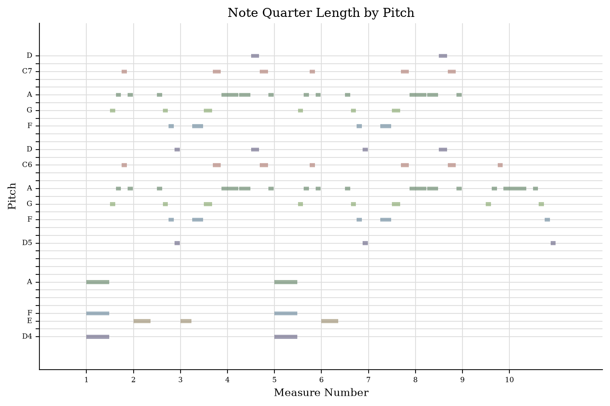
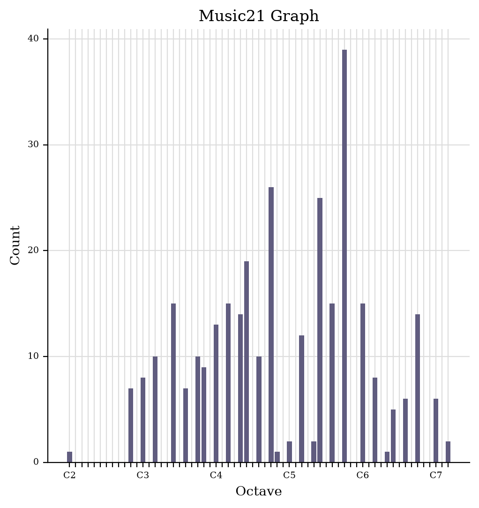
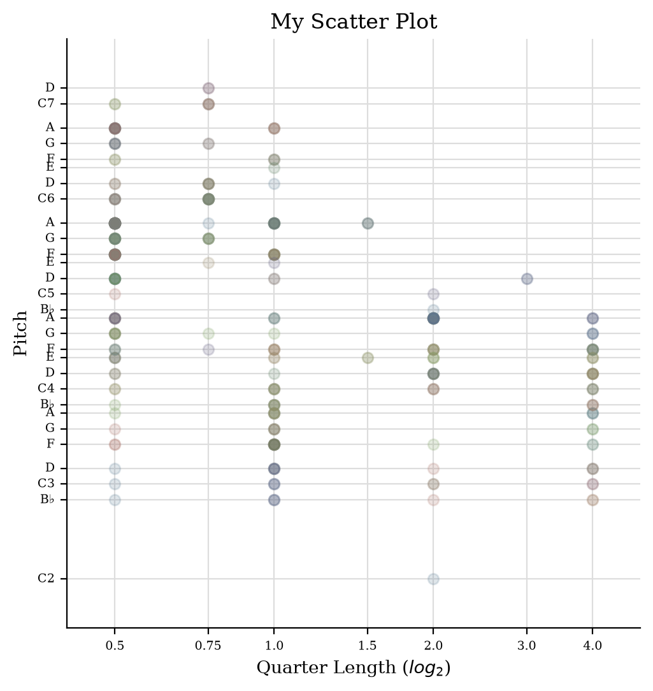

The first task for this week included producing a jSymbolic analysis of my piece from the previous week. I have selected some of the features I found most interesting. Range-62 MeanPitch-70 MostCommonPitchClass-9 LastPitch-36 MostCommonRhythmicValue-0.5
My generated analysis files can be found below.


